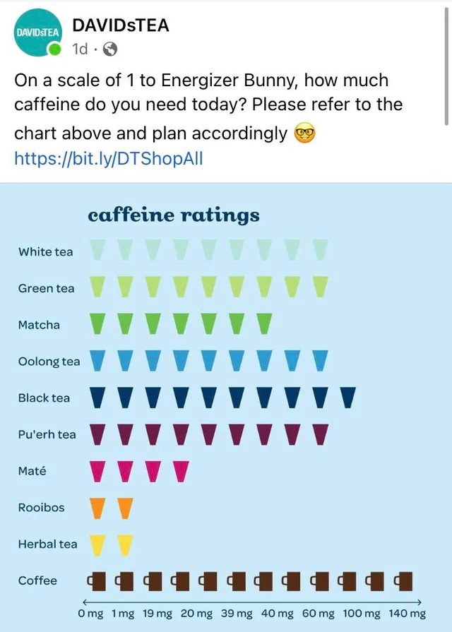

Here are two graphs embeded from https://rdeconomist.github.io/library
This is my first chart, an interactive scatter plot
showing the relationship between GDP per capita and Life Expectancy in years.
This is my second chart, a line chart
showing the Real GDP Per Capita of 6 countries over 30 years.
Here are two graphs created using https://www.economicsobservatory.com/create
Chosen Topic: “Under-performing: How can we boost Britain’s low productivity?"
Find a chart that a journalist, think tank, television channel or company has used. Your challenge is to replicate it, and then improve on it.
Below is the original chart:
The website Wikepedia was scraped. Collab notebook here.
The Wikepedia website
Use the ONS API to batch download nine different series. Save these to your GitHub account, and use these to supply the data to nine charts on a theme or themes of your choice.
Produce two maps and embed them in your portfolio page. Both should be of the same country, region, area, city
Produce two charts that use advanced analytics
Produce two visualisation that have interactive elements